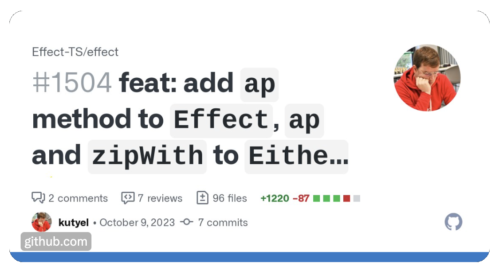

Do you even Effect.ap, bro?

After my last functional programming workshop in React Alicante 2023, I got a fair complain: “Why aren’t we doing this in TypeScript”?. And the reason was simple: a few years ago, there was no clear improvement over Ramda and Crocks for JavaScript. These libraries worked great and provided everything I needed for a pleasant functional programming experience: function composition, currying and data-last, unary functions that I could compose easily, to give you a sample snippet:
// getStreetName :: User -> Maybe String
const getStreetName = compose(
chain(getProp('name')),
chain(getProp('street')),
getProp('address')
)However, it is hard enough to explain functional concepts, so the added complexity for the students of having to compile this operations in their heads (not being used to them) and receiving no help from their editor whatsoever made it a fair complain. So, I made up my mind, I was going to rewrite my workshop repo exercises into TypeScript! 🚀
Historical issues with FP in TypeScript
However, there was a tiny little issue: all typings for Ramda and Crocks for TypeScript are utterly broken. Those libraries were designed to work in JavaScript, and never had TypeScript in mind. For example, curried functions in general mess up with TypeScript’s type inference, which is tree based, and a function like curry itself would be virtually impossible to represent in TypeScript.
Furthermore, I needed a library like Crocks, that provided me the data structures and ADTs (Algebraic Data Types) that I am used to and that was thought from the ground up to work with TypeScript and made it shine. And that is when I decided to finally try out Effect.ts!
Enter Effect.ts
After watching a couple of videos on YouTube, reading a few Twitter threads and asking some questions on their Discord (which is really friendly btw), I managed to convert my exercises successfully to TypeScript and to solve them in really elegant ways:
const register = (name: string): Effect.Effect<never, never, string> =>
pipe(
validateName(name),
Effect.flatMap(save),
Effect.match({
onFailure: (error) => `Failure: ${error}`,
onSuccess: (user) => `Success: ${user.name} saved!`,
})
)The overall concept of Effect is quite easy to grasp, it is really well explained with amazing documentation and it is very powerful at its core. The only thing I needed to get used to is that the pipe function needs to receive as the first argument the data itself, instead of only a succession of curried functions. This single detail pleases the TypeScript compiler (type inference can now work nicely) and allows me to keep focusing on writing my declarative functions the way I want to! 💯
Do you even lift, bro?
Everything was fine and dandy until I reached the exercises with Applicative Functors and I found one issue with the library: there was no ap method in the Effect type, nor in the Either type. I asked this on their discord and it was agreed that those functions were missing, so I decided to contribute them, as you can see by the headline image of this blogpost. 😉
The funny thing about this is that there were other ways to solve this exercise, for example, the Effect.all function:
const renderAllDOM: Effect.Effect<never, never, string> = Effect.all([
getPost(1),
getComments(1),
]).pipe(Effect.map(renderAll))And even another syntactical choice is offered to the Effect user: using async generators to emulate Haskell’s do-notation! 🤯
const renderGenDOM = Effect.gen(function* (_) {
const posts = yield* _(getPost(1))
const comments = yield* _(getComments(1))
return renderAll([posts, comments])
})What this means is that, obviously, the Effect and Either types were already valid Applicative Functors, they were just missing a specific operator to made the code a bit more familiar to functional programmers coming from Haskell like myself. The same code, using the classic ap operator, would be like the following:
const renderDOM: Effect.Effect<never, never, string> = pipe(
Effect.succeed(render),
Effect.ap(getPost(1)),
Effect.ap(getComments(1))
)Which style to go for is a matter of personal preference, but I’m glad my contribution to the library made this choice also available. 😊
Effect.ts vs fp-ts
Every time I tried applying what I knew about FP from Ramda/JS to TypeScript, I always felt I was out of my comfort zone. I never quite understood fully fp-ts, since it was heavily inspired by Scala and I learnt functional programming in Haskell. This might sound silly and appear to be a trivial difference, but it is not, at least for the way my brain was wired. 🧠
On the contrary, Effect seemed to be very simple to understand in principle and everything felt like pieces of a puzzle 🧩 fitting together and playing along very nicely with the subtleties of TypeScript, like, type inference sort of keeps working (with some exceptional footguns) and currying and function composition work reasonably well, and that is amazing!
Also, having the incredible @gcanti on board the Effect.ts train, is not only a good sign (he was absolutely kind and helpful both on Github and Discord), but it is a clear correct step in the right direction for functional programming in TypeScript!
Conclusion
With my existing knowledge of functional programming concepts, it took me less than a week (‼️) to learn the basics of Effect.ts, and now I can thoroughly recommend it to the people that want to use these timeless concepts in their TypeScript codebases.
If you have enjoyed this blogpost, definitely give Effect.ts a try and follow me on Twitter (@FlavioCorpa) to support my impostor syndrome and motivate me to keep writing technical posts! 🙏🏻
I hope to give a future workshop in React Alicante 2024 and teach the amazing super powers of functional programming in TypeScript with Effect.ts, if you want to learn more and meet me in person, hope to see you there! 🤞🏻